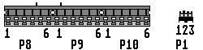
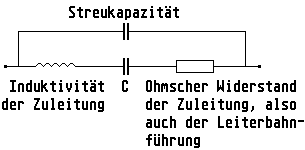

Previous
Next
TOC
Die Steckerbelegung des PC Netzteiles
Der P1, P8 und P9 Stecker (wird auf das PC Mainboard gesteckt)

Die Belegung des P8 Steckers
Die Belegung des P1 Steckers
Orange - Power Good
Pin 1 - Braun oder Rot
Red
- +5 VDC (or n/c)
Pin 2 - Weiss oder Grau
Yellow - +12 VDC
Pin 3 - Schwarz
Blue
- -12 VDC
Black
- Ground
Pin 1 und 3 müssen miteinander
Black
- Ground
verbunden werden, sonst läßt sich
das Netzteil nicht einschalten
Die Belegung des P9 Steckers
Die Belegung des P10 Steckers
(nur bei 3.3 Volt Netzteilen)
Black
- Ground
Black
- Ground
Black
- Ground
Black
- Ground
White
- -5 VDC
Black
- Ground
or Yellow
Lila
- +3.3 VDC
Red
- +5 VDC
Lila
- +3.3 VDC
Red
- +5 VDC
Lila
- +3.3 VDC
Red
- +5 VDC
Weiterhin kann es am Falcon030 nötig sein, sollten die Störspannungen
(Ripple genannt) mehr als 100 millivolt betragen (nur mit einem
Oszilloskop feststellbar), dann sollte man am Elektrolytkondensator
C1 (4700 uF, liegt etwas unterhalb der eingebauten IDE Festplatte)
einen oder mehrere 4700uF Elektrolytkondensatoren parallel schalten
und mit dem Oszilloskop die Störspannungen kontrollieren! Sollte das
auch nicht helfen (sehr selten ist bei den PC üblichen Schaltnetzteilen
die Schaltfrequenz angegeben), sollte man direkt an die Anschlußdrähte
vom Elektrolytkondensator auf der Hauptplatine nahe des Anschluß-
steckers für das Netzteil (ohne die Anschlußbeine zu verlängern!)
einen Keramikkondensator von 10nF bis 0.1uF anzulöten, mehrere Werte
ausprobieren und die +5V Spannungsversorgung wieder oszilloskopieren.
Der Witz an der Sache ist folgender:
Mehrere zusammengeschaltete Kondensatoren ergänzen sich in Ihren
elektrischen Eigenschaften zu einem einzigen Kondensator, bieten aber
mit ihrem kleineren Ohmschen und kapazitiven Widerstand bei einer
kleineren Induktivität erheblich bessere Werte als ein einziger großer
Kondensator. Weshalb sich ein Kondensator nicht immer wie ein Konden-
sator verhält, sieht man aus dem unten abgebildeten Ersatzschaltbild.

Kapitel Die Steckerbelegung des PC Netzteiles, Seite 1